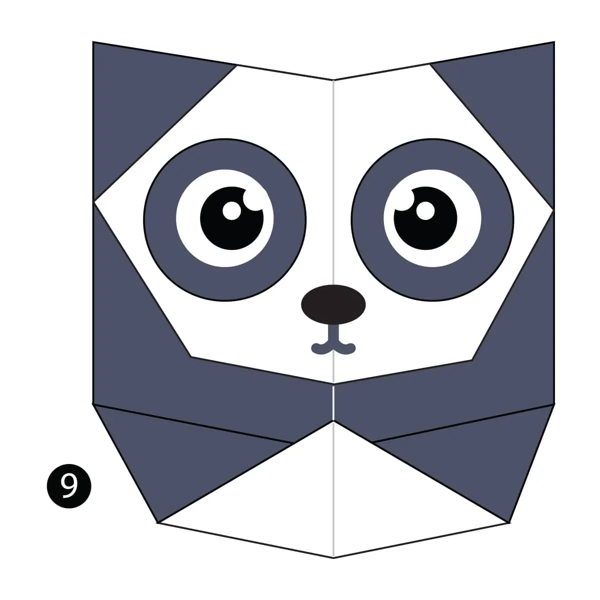

----
>Origami Designs
aboutMe
Origami Instruction and Images
Step by Step diagrams are probably the most popular and easiest to follow way to show how to fold things out of paper.
camel
Camel's ears are furry
Camel can move easily across the sand because of its specially designed feet
When they find water, they will drink as much as possible.
chameleon
Chameleons are reptiles that are part of the iguana suborder
Changing skin color is an important part of communication among chameleons
Most chameleons have a prehensile tail that they use to wrap around tree branches
pigeon
Pigeons are incredibly complex and intelligent animals
Pigeons are renowned for their outstanding navigational abilities
Pigeons have excellent hearing abilities.
teddy-bear
The Teddy Bears’ Picnic song was originally called The Teddy Bear Two Step
Winnie the Pooh was based on a real bear

panda
Giant pandas are good at climbing trees and can also swim
Pandas go from pink to white and black (or brown)
Pandas are "lazy" — eating and sleeping make their day
cicada
All cicada species in North America came from a common ancestor
cicada species switches from being on a 13-year cycle to a 17-year cycle